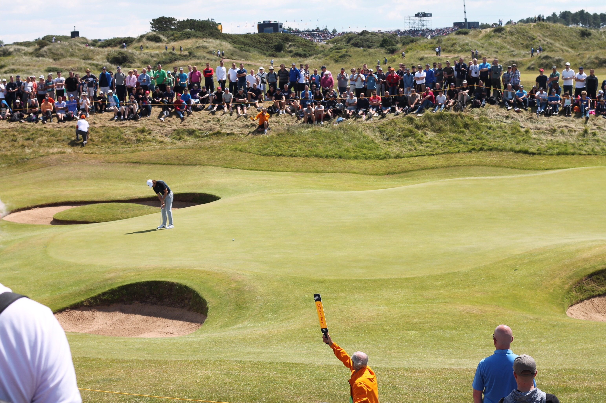

swing thoughts
"The most important shot in golf is the next one."
- Ben Hogan
Golf-related links
Below are sample videos from various online instructors that are essential viewing for golfers of all skill levels.
Mike Malaska
Shawn Clement
Monte Scheinblum
Mark Crossfield
Wayne Defrancesco
Here are some must-read works that will contribute to one's knowledge of the game.
- Five Lessons by Ben Hogan
- The Golfing Machine by Homer Kelley
- Secrets of the Short Game by Phil Mickelson
- Dave Pelz's Short Game Bible
- How I Play Golf by Tiger Woods
The golf courses I've played:
- Old Westbury GC
- Douglaston GC
- Clearview GC
- Forest Park GC
- Willow Creek GC
- Pelham Bay GC
- Split Rock GC
- Van Cortland Park GC
- Mosholu GC
- Cedarbrook GC
- Bethpage Black
- More to be added!
